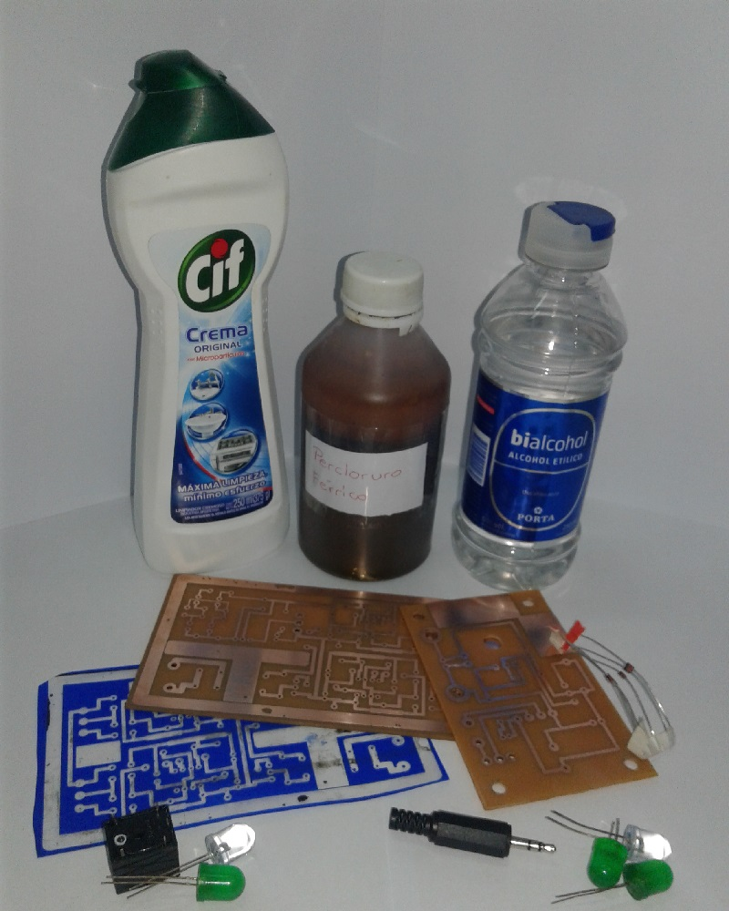
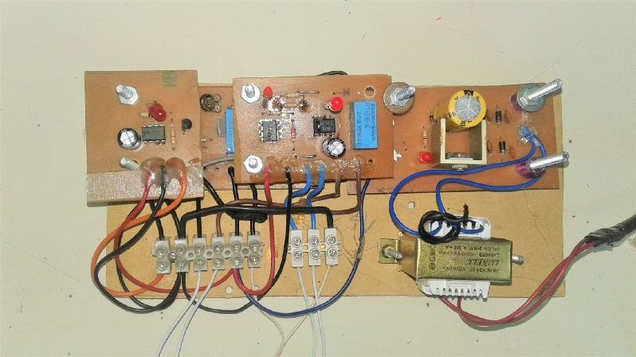
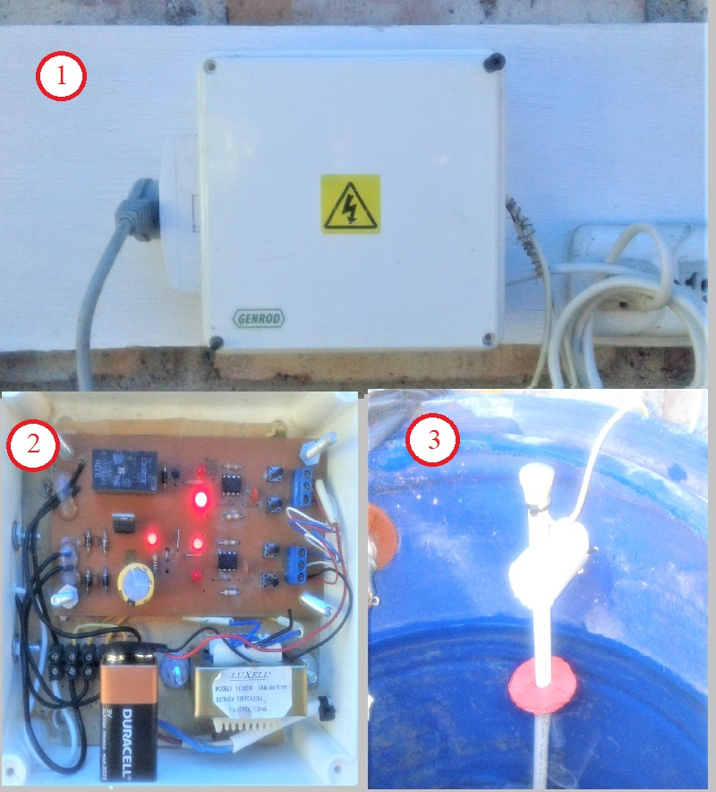
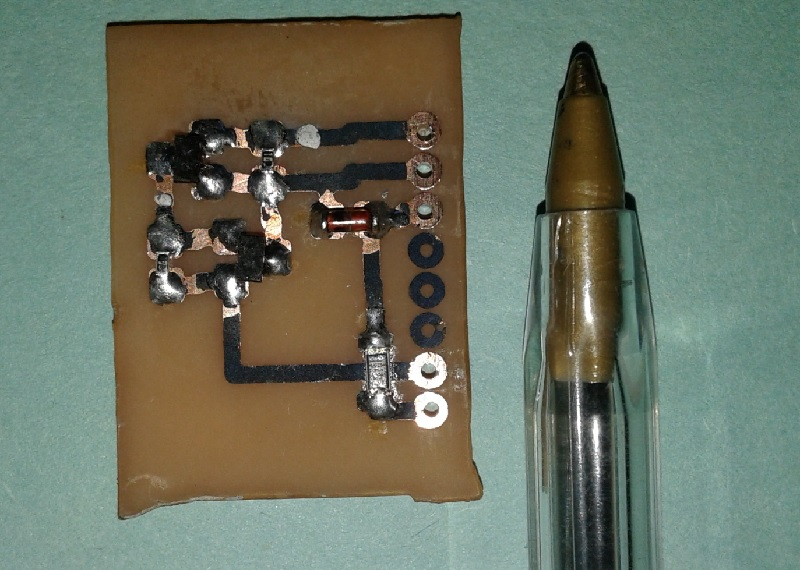
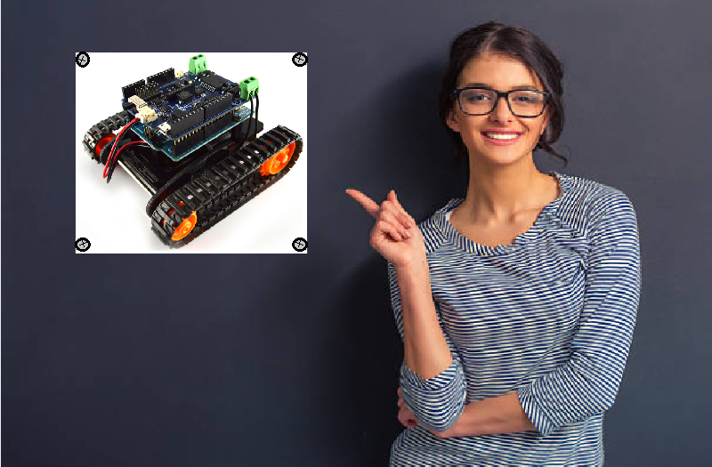

Fabricación de circuitos impresos.
Cualquier proyecto de tecnología y electrónica necesita una placa impresa donde montar los componentes. Espas placas pueden conseguirse en los comercios, pero en la mayoría de los casos, la fabricaremos nosotros mismos.

Elementos necesarios para la fabricación de circuitos impresos.
Alarma Domiciliario
Fabricaremos todas las etapas de una alarma domiciliaria. Algunas de sus características:
- Encendido demorado, para poder salir del domicilio luego de la activación.
- Activación inmediata. La alarma se dispara al momento de acceder a la zona protegida.
- Activación demorada. La alarma no se dispara inmediatamente sino que se retrasa para permitirle al usuario llegar a desactivar el dispositivo.
- Control remoto. La alarma es activada y desactivada a distancia (fuera del domicilio).
- Cargador de batería. La batería alimenta el dispositivo en caso de fallo eléctrico.

Alarma domiciliaria
Control de nivel de Agua Tanque-Sisterna
Fabricaremos todas las etapas del control de nivel. Algunas de sus características:
- Control de mínimo y máximo nivel de agua de tanque.
- Control de mínimo y máximo nivel de la sisterna.
- Lógica de control y activación de bomba centrífuga.
- Varillas sensoras de nivel de agua.
- Fuente de alimentación y batería de respaldo

- Modelo terminado del control de nivel de agua.
- Circuito electrónico de control contenido dentro del control de nivel.
- Varilla sensora de nivel de agua.
Fabricación de circutitos con componentes de montaje superficial (SMD) reciclados.
Como desafío realizaremos circuitos electrónicos con componentes de montaje superficial reciclados de otros equipos deshechados (chatarra electrónica).

Circuito con componentes SMD. Se observa una lapicera común para comparar el tamaño.
¿Qué proyecto vas a hacer vos?
Aunque hay proyectos predefinidos, tu puedes elegir y realizar algún proyecto que te interese perticularmente.

Arriba